1036L14 CAMSHAFTS IN CAMSHAFT HOUSING - R.R. WITH CAMSHAFT HOUSING REMOVED - INCLUDES POSSIBLE. REPLACEMENT. OF CAMSHAFT HOUSING
- Path
- Procedures > 10 ENGINE UNIT > 1036 TIMING SYSTEM > 1036L CAMSHAFT (2) IN TOP HEAD (1) > 1036L14 CAMSHAFTS IN CAMSHAFT HOUSING - R.R. WITH CAMSHAFT HOUSING REMOVED - INCLUDES POSSIBLE. REPLACEMENT. OF CAMSHAFT HOUSING
- Kind
- repair procedure (removal / refitting; the operation number is the code)
- Applies to
- engines: 2.3 JTD 16V; all production periods
- Interactive page
- https://sloeber94.github.io/elrnDB-fDct/en/#/244000727
Applies to: engines: 2.3 JTD 16V; all production periods
 Removing
Removing
 Refitting
Refitting- Remove the tools for timing and locking the camshafts.
 | Description | Code | Function |
|---|---|---|---|
. | Templates | 99360614 | Camshaft timing adjustment |
1. Fit the camshaft housing on the tool (1a), secure it using the bolts (1b) and position the camshaft housing in the vice.
| Description | Code | Function |
|---|---|---|---|
1a | Support | 1.860.470.000 | Positioning of cylinder head extension in vice |
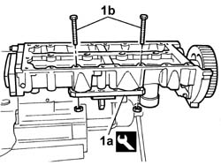
Applies to: engines: 2.3 JTD 16V; all production periods
1. Undo the fixing bolt.
2. Remove the timing sensor.
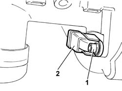
Applies to: engines: 2.3 JTD 16V; all production periods
1. Undo the fixing bolts.
2. Remove the protective cover for the idler gears.
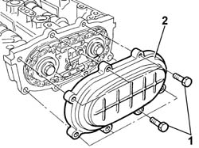
Applies to: engines: 2.3 JTD 16V; all production periods
- Produce a reaction on the timing drive pulley to stop the rotation of the shafts.
1. Undo the bolt fixing the exhaust camshaft.
2. Undo the bolt fixing the inlet camshaft.
- Follow the dismantling order described very closely.
3. Undo the bolts (3a) fixing the idler gears to the camshaft housing, apply pressure at the point shown by the arrow (3b) and remove the idler gears (3c).
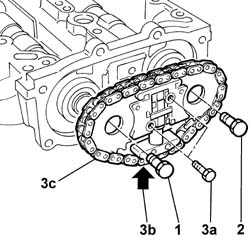
Applies to: engines: 2.3 JTD 16V; all production periods
1. Working on the opposite side, stop the rotation of the pulley using the tool (1a) and undo the fixing bolt (1b).
| Description | Code | Function |
|---|---|---|---|
1a | Counter-torque | 1.870.815.000 | Timing pulley lock |
| Description | Code | Function |
|---|---|---|---|
1a | Pins for counter-torque | 1.870.836.000 | Timing pulley lock |
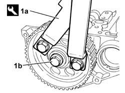
Applies to: engines: 2.3 JTD 16V; all production periods
1. Position a hexagonal bolt in the housing for the pulley fixing bolt, position the USAG 452/1 universal extractor and tighten the extractor pin (1b) until it is in contact with the bolt positioned previously.
2. Continue tightening the tool pin until the camshaft pulley is extraected.
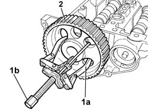
Applies to: engines: 2.3 JTD 16V; all production periods
1. Remove the circlip (1a), remove the front sealing plug (1b), then remove the exhaust camshaft (1c).
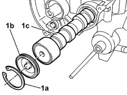
Applies to: engines: 2.3 JTD 16V; all production periods
1. Working from the rear, push the inlet shaft until the oil seal (1a) comes out of its housing and remove the inlet camshaft (1b).
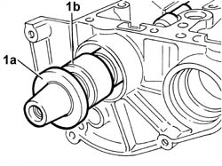
Applies to: engines: 2.3 JTD 16V; all production periods
1. Check that the diameter of the pins (1a) and the cam lift (1b) corresponds to the recommended figures.
- Take measurements for both camshafts.
 | Subject | Value |
|---|---|---|
1a | Intake shaft | mm |
- | Journal diameter, ø1 | 48.950 ÷ 48.925 |
| Subject | Value |
|---|---|---|
1a | Exhaust shaft | mm |
- | Journal diameter, ø1 | 48.950 ÷ 48.925 |
| Subject | Value |
|---|---|---|
1a | Exhaust shaft, ø3 | mm |
- | Journal diameter | 35.950 ÷ 35.925 |
| Subject | Value |
|---|---|---|
1a | Intake shaft, ø3 | mm |
- | Journal diameter | 35.950 ÷ 35.925 |
| Subject | Value |
|---|---|---|
1a | Exhaust shaft, ø2 | mm |
- | Journal diameter | 46.950 ÷ 46.925 |
| Subject | Value |
|---|---|---|
1a | Intake shaft | mm |
- | Journal diameter, ø2 | 46.950 ÷ 46.925 |
| Subject | Value |
|---|---|---|
1b | Intake shaft | mm |
- | Cam lift | 3.77 |
| Subject | Value |
|---|---|---|
1b | Exhaust shaft | mm |
- | Cam lift | 4.203 |
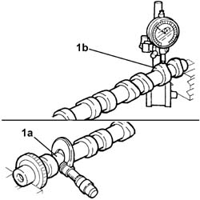
Applies to: engines: 2.3 JTD 16V; all production periods
Refitting
Removing- Fit the camshafts in the camshaft housings.
- Fit the tools for timing and locking the camshafts.
| Description | Code | Function |
|---|---|---|---|
. | Templates | 99360614 | Camshaft timing adjustment |
- Fit the idler gears in the rear housing and in the camshafts.
- Tighten the bolt fixing the idler gear on the inlet camshaft.
- Tighten the bolt fixing the idler gear on the exhaust camshaft.
- Tighten the bolts fixing the idler gears to the camshaft housing.
1. Using the tool (1a), fit the new oil seal (1b) on the inlet side camshaft tightening the tool bolt until the oil seal is in contact with the seat in the camshaft housing.
| Description | Code | Function |
|---|---|---|---|
1a | Fitting tool | 1.870.854.000 | Introduction of new oil seal |
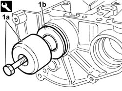
Applies to: engines: 2.3 JTD 16V; all production periods
- Fit the oil seal plug in the exhaust camshaft.
- Lock the sealing plug using a circlip (Sieger).
1. Fit the pulley with a tapered connector on the inlet shaft.
2. Fit the pulley timing pin in relation to the timing sensor position.
| Description | Code | Function |
|---|---|---|---|
2 | Pin | 1.860.617.000 | Adjustment of timing pulley with timing sensor |
3. Lock the bolt fixing the timing drive pulley without tightening it.
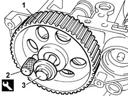
Applies to: engines: 2.3 JTD 16V; all production periods
- Keeping the inlet camshaft pulley locked, tighten the bolts fixing the idler gears to torque.
 | Value - daNm | Fastening | Component | Ø |
|---|---|---|---|---|
. | 11,4 | Bolt | IDLER GEAR ON INTAKE SHAFT | M12 |
| Value - daNm | Fastening | Component | Ø |
|---|---|---|---|---|
. | 11,4 | Bolt | IDLER GEAR ON EXHAUST SHAFT | M12 |
- Fit the cover for the idler gears after having replaced the gasket.
- Fit the timing sensor in the housing.
- remove the camshaft housing from the tool positioned previously for locking it in the vice.
| Description | Code | Function |
|---|---|---|---|
. | Support | 1.860.470.000 | Positioning of cylinder head extension in vice |